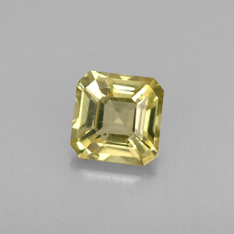
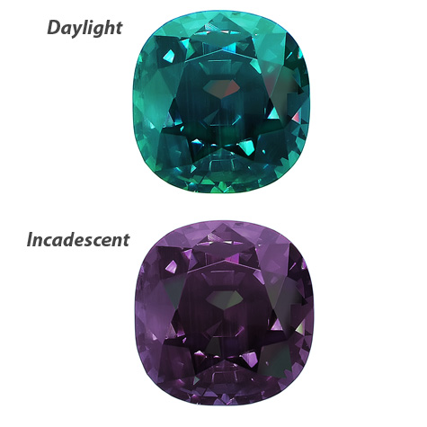

Chrysobéryl
- Système cristalin : orhtorhombique
- Indice de réfraction : 1,740 à 1,755
- Birèfringence : biaxe +0,009
- Densité : 3,73
- Dureté : 8,5
- Couleur : vert jaune
- Particularité : l'alexandrite est un chrysobéryl a changement de couleur
- Image :

